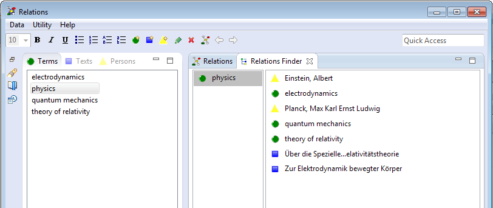
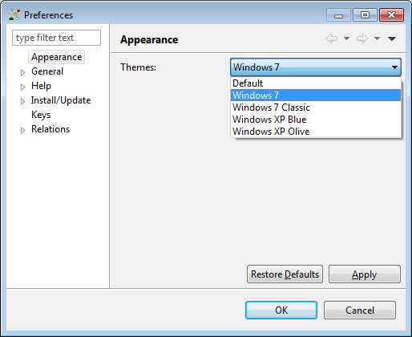
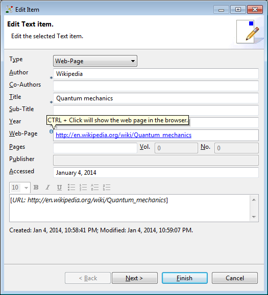

Eclipse e4 technology |
Relations is based on the new Eclipse e4 technology now.  |
Configure appearance |
Thanks to e4 styling technology, you can switch the application's appearance (see Utility -> Preferences -> Appearance).  |
Open URL in browser |
If the text item's web page field contains a valid URL, you can open this page in your default browser by clicking on the URL while pressing the CRTL key.  |